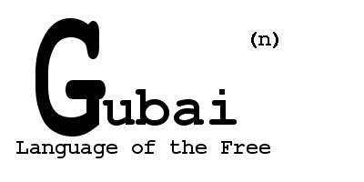

Book
of Divergence
Book of Dark
Book of Space
Book of Chaos
Book of Research
Book of PoeNtry
Book of Language
Book of nArt
Book of Convergence

Lesson 1
It is very important that you observer the customs of the Free
when you enter one of the Houses.
Protocol dictates that a two tone doorbell be fitted to the premises, and that upon
arrival the first tone sounds until its harmonics have completely diminished. Then
and only then will the button be released to signal entry to the premises. The
Occupier will open the door to the premises in synchronisation with the Visitor.
This is at Phileas' command and begins the process.
The customary greeting at this point is "Ha Ma Free" (hah-mah-free), meaning "Hello My Friend"
G'Baaaaaaaaaaaaaaaaaaaaaaaaaaaaaaaaaaaaaaaaaaaaaaaaaaaaaaaaaaaaaaaaaaaaaaaaaaaaaaaaaaaaaaaaaaa